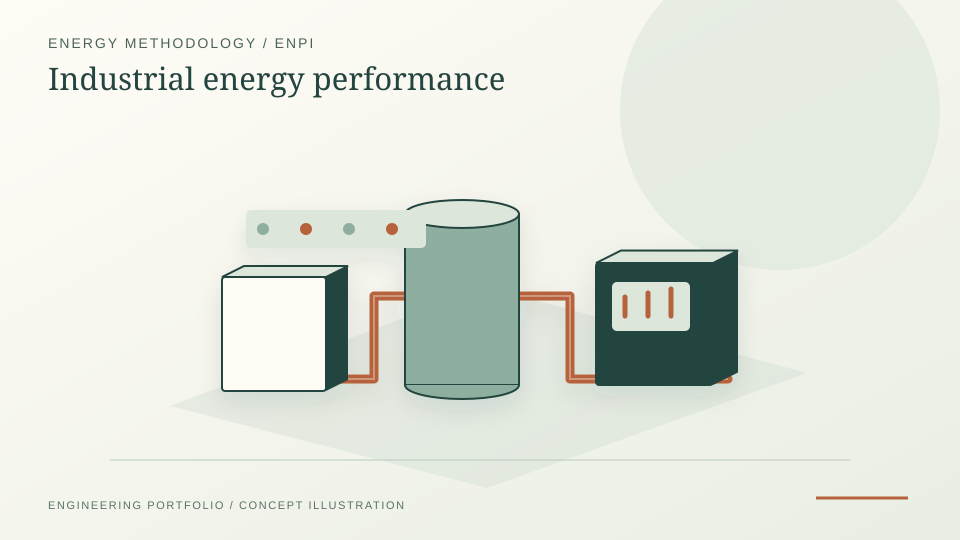

Developed and independently validated a quantitative methodology for industrial energy performance mapping rather than a one-off audit checklist.
Industrial decarbonisation · Energy performance mapping · Public-domain methodology summary
Industrial Energy Performance Mapping Methodology
A self-directed method-development project for adapting energy-performance mapping across multiple jurisdictions and manufacturing sites — combining regulatory comparison, metering-readiness assessment, load-driver logic, deviation detection and implementation-roadmap design.
PythonISO 50001EU EEDExcel

PROJECT REFERENCE / ALLEIMA-ENERGY-EFFICIENCYMapped load-driver logic, metering gaps and deviation-detection needs from noisy operational data into documented technical reporting.
Compared regulatory and energy-audit requirements across seven jurisdictions, with electrical utilities and compressed air systems treated as relevant electrification pathways.
Site names, plant consumption figures, internal cost data and the consultancy deliverable itself are proprietary to Alleima and intentionally omitted. What follows is a methodology and public-regulatory summary only.
The general problem
Multinational industrial groups operate manufacturing sites across countries with fundamentally different legal obligations for energy auditing. EU member states implement the EED with national variations (e.g. statutory audit cycles in Sweden, the German EDL-G, the Dutch Energy Savings Obligation, the Czech Act No. 406/2000). India's PAT scheme applies only to Designated Consumers above sectoral thresholds. China's Energy Conservation Law delegates enforcement to provincial authorities. The United States has no federal audit mandate.
The methodology question is therefore not "does energy efficiency matter?" — it does — but "how do you implement a coherent, data-driven energy-performance approach across sites operating under rules ranging from strict four-year statutory cycles to purely voluntary regimes?" The useful R&D output is the method: identify the right load drivers, expose metering gaps, compare sites fairly, and turn noisy operational data into improvement concepts.
What I contributed (public-domain summary)
- Reviewed primary legal instruments — including the EU EED, Sweden's energy-mapping law (EKL), Germany's EDL-G, the Netherlands' Activiteitenbesluit and Energy Savings Obligation, Czechia's Act No. 406/2000, India's Energy Conservation Act + PAT Rules, China's Energy Conservation Law and the principal US DOE voluntary programmes (Better Plants, IAC, SEP).
- Mapped the regulatory landscape into a gradient of stringency to identify where ISO 50001 is a legal alternative vs. an enhancement vs. purely voluntary.
- Designed a generic three-tier audit framework aligning audit depth, monitoring requirements and corporate-system integration with site regulatory and operational context.
- Structured EnPI logic around load drivers, metering availability and deviation detection so energy performance can be compared across sites with uneven data quality.
- Drafted a phased rollout pattern and site-adaptation guidelines (kept generic in this public summary).
Regulatory gradient across jurisdictions (public information)
The comparative analysis revealed a clear spectrum of stringency. The instruments and enforcement mechanisms named below are public law:
- High stringency (statutory audit cycles, enforcement): Sweden (EKL, 4-year cycle, Energimyndigheten oversight); Germany (EDL-G, BAFA enforcement, fines for non-compliance); Netherlands (RVO eLoket portal, municipal inspections, permit implications); Czechia (Act No. 406/2000, ISO 50001 as a legal alternative).
- Moderate obligations (threshold-triggered or regionally variable): India (PAT scheme applies only to Designated Consumers above sectoral thresholds); China (NDRC delegates to provincial energy bureaus; coverage depends on local "key energy consumer" designation).
- Predominantly voluntary: United States (no federal mandate; DOE Better Plants, IAC and SEP programmes are opt-in; states such as Washington create indirect pressure via the Climate Commitment Act's GHG-reporting thresholds).
Germany stands out for incentive design: ISO 50001 certification unlocks SpaEfV tax relief on electricity and energy taxes, and Germany historically accounts for the largest share of global ISO 50001 certifications. This is the kind of public-domain observation that drives a certification-pathway recommendation in any consultancy context.
Key findings (generic)
Multi-jurisdictionEU + Asia + North America compared against the EU EED baseline
Three-tier frameworkcertified-EnMS track · hybrid track · low-maturity track
Method-development outputboundary, baseline, drivers, residual diagnostics, M&V, governance
ISO 50001 certification status is consistently the clearest organisational dividing line: certified sites tend to show higher audit frequency, greater measurement granularity and better-documented energy savings per measure than non-certified sites, regardless of country. Where local incentive structures link certification to tax relief or capital grants (most clearly in Germany), the certification pathway often has a defensible business case independent of compliance.
Recommended methodology — generic three-tier framework
The framework has three tiers, each sharing a common core but scaling audit intensity, digital infrastructure requirements and corporate-system integration to match site context:
- Tier 1 — ISO 50001 certified / EU-regulated: EnMS-driven audits, fully integrated with the corporate energy-management system, continuous monitoring via SCADA, equipment-level EnPIs, annual internal plus third-party surveillance audits.
- Tier 2 — active EMS, no ISO 50001: hybrid audits combining structured internal reviews with periodic third-party verification; sub-metering of major process systems; standardised EnPI reporting.
- Tier 3 — voluntary / low-maturity: third-party general audits, low-cost KPIs (annual energy balance, specific energy per tonne), alignment with available utility or DOE programmes.
All tiers share the same core components: annual energy balance, site walkthrough, baseline EnPI establishment, ECM identification with CAPEX/OPEX modelling, and measurement & verification (M&V). This ensures cross-site comparability regardless of local regulatory context.
R&D interpretation
Framed as industrial-research evidence, this is a method-development exercise: define measurable performance indicators, understand data availability, normalise against operational drivers, detect deviations and translate findings into implementable improvement concepts. The same structure is relevant to industrial electrification, because electrical utilities, compressed air, process heating, cooling and storage all require credible baselines before technology substitution or control strategies can be evaluated.
Relevance
Why this matters
The project demonstrates how to translate a legally complex, multi-jurisdictional regulatory landscape into an actionable methodology. It required reading primary legislation across multiple countries, gathering operational context from sites under different audit regimes, and designing a framework that works under both statutory mandates and voluntary contexts simultaneously.
The tiered structure is applicable to any multinational industrial company facing the same problem: how to standardise energy-management practice globally without ignoring the legal and operational reality at each site. The connection from regulatory mapping through generic methodology to a phased implementation pattern is the core public-domain takeaway — proprietary site detail belongs to the client and is not republished.